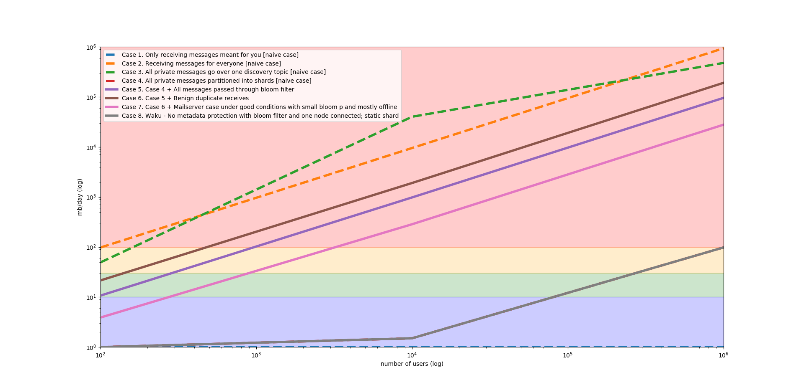

Fixing Whisper with Waku
This post will introduce Waku. Waku is a fork of Whisper that attempts to addresses some of Whisper’s shortcomings in an iterative fashion. We will also introduce a theoretical scaling model for Whisper that shows why it doesn’t scale, and what can be done about it.
Introduction
Whisper is a gossip-based communication protocol or an ephemeral key-value store depending on which way you look at it. Historically speaking, it is the messaging pilllar of Web3, together with Ethereum for consensus and Swarm for storage.
Whisper, being a somewhat esoteric protocol and with some fundamental issues, hasn’t seen a lot of usage. However, applications such as Status are using it, and have been making minor ad hoc modifications to it to make it run on mobile devices.
What are these fundamental issues? In short:
- scalability, most immediately when it comes to bandwidth usage
- spam-resistance, proof of work is a poor mechanism for heterogeneous nodes
- no incentivized infrastructure, leading to centralized choke points
- lack of formal and unambiguous specification makes it hard to analyze and implement
- running over devp2p, which limits where it can run and how
In this post, we’ll focus on the first problem, which is scalability through bandwidth usage.
Whisper theoretical scalability model
(Feel free to skip this section if you want to get right to the results).
There’s widespread implicit knowledge that Whisper “doesn’t scale”, but it is less understood exactly why. This theoretical model attempts to encode some characteristics of it. Specifically for use case such as one by Status (see Status Whisper usage spec).
Caveats
First, some caveats: this model likely contains bugs, has wrong assumptions, or completely misses certain dimensions. However, it acts as a form of existence proof for unscalability, with clear reasons.
If certain assumptions are wrong, then we can challenge them and reason about them in isolation. It doesn’t mean things will definitely work as the model predicts, and that there aren’t unknown unknowns.
The model also only deals with receiving bandwidth for end nodes, uses mostly static assumptions of averages, and doesn’t deal with spam resistance, privacy guarantees, accounting, intermediate node or network wide failures.
Goals
- Ensure network scales by being user or usage bound, as opposed to bandwidth growing in proportion to network size.
- Staying with in a reasonable bandwidth limit for limited data plans.
- Do the above without materially impacting existing nodes.
It proceeds through various case with clear assumptions behind them, starting from the most naive assumptions. It shows results for 100 users, 10k users and 1m users.
Model
Case 1. Only receiving messages meant for you [naive case]
Assumptions:
- A1. Envelope size (static): 1024kb
- A2. Envelopes / message (static): 10
- A3. Received messages / day (static): 100
- A4. Only receiving messages meant for you.
For 100 users, receiving bandwidth is 1000.0KB/day
For 10k users, receiving bandwidth is 1000.0KB/day
For 1m users, receiving bandwidth is 1000.0KB/day
------------------------------------------------------------
Case 2. Receiving messages for everyone [naive case]
Assumptions:
- A1. Envelope size (static): 1024kb
- A2. Envelopes / message (static): 10
- A3. Received messages / day (static): 100
- A5. Received messages for everyone.
For 100 users, receiving bandwidth is 97.7MB/day
For 10k users, receiving bandwidth is 9.5GB/day
For 1m users, receiving bandwidth is 953.7GB/day
------------------------------------------------------------
Case 3. All private messages go over one discovery topic [naive case]
Assumptions:
- A1. Envelope size (static): 1024kb
- A2. Envelopes / message (static): 10
- A3. Received messages / day (static): 100
- A6. Proportion of private messages (static): 0.5
- A7. Public messages only received by relevant recipients (static).
- A8. All private messages are received by everyone (same topic) (static).
For 100 users, receiving bandwidth is 49.3MB/day
For 10k users, receiving bandwidth is 4.8GB/day
For 1m users, receiving bandwidth is 476.8GB/day
------------------------------------------------------------
Case 4. All private messages are partitioned into shards [naive case]
Assumptions:
- A1. Envelope size (static): 1024kb
- A2. Envelopes / message (static): 10
- A3. Received messages / day (static): 100
- A6. Proportion of private messages (static): 0.5
- A7. Public messages only received by relevant recipients (static).
- A9. Private messages partitioned across partition shards (static), n=5000
For 100 users, receiving bandwidth is 1000.0KB/day
For 10k users, receiving bandwidth is 1.5MB/day
For 1m users, receiving bandwidth is 98.1MB/day
------------------------------------------------------------
Case 5. 4 + Bloom filter with false positive rate
Assumptions:
- A1. Envelope size (static): 1024kb
- A2. Envelopes / message (static): 10
- A3. Received messages / day (static): 100
- A6. Proportion of private messages (static): 0.5
- A7. Public messages only received by relevant recipients (static).
- A9. Private messages partitioned across partition shards (static), n=5000
- A10. Bloom filter size (m) (static): 512
- A11. Bloom filter hash functions (k) (static): 3
- A12. Bloom filter elements, i.e. topics, (n) (static): 100
- A13. Bloom filter assuming optimal k choice (sensitive to m, n).
- A14. Bloom filter false positive proportion of full traffic, p=0.1
For 100 users, receiving bandwidth is 10.7MB/day
For 10k users, receiving bandwidth is 978.0MB/day
For 1m users, receiving bandwidth is 95.5GB/day
NOTE: Traffic extremely sensitive to bloom false positives
This completely dominates network traffic at scale.
With p=1% we get 10k users ~100MB/day and 1m users ~10gb/day)
------------------------------------------------------------
Case 6. Case 5 + Benign duplicate receives
Assumptions:
- A1. Envelope size (static): 1024kb
- A2. Envelopes / message (static): 10
- A3. Received messages / day (static): 100
- A6. Proportion of private messages (static): 0.5
- A7. Public messages only received by relevant recipients (static).
- A9. Private messages partitioned across partition shards (static), n=5000
- A10. Bloom filter size (m) (static): 512
- A11. Bloom filter hash functions (k) (static): 3
- A12. Bloom filter elements, i.e. topics, (n) (static): 100
- A13. Bloom filter assuming optimal k choice (sensitive to m, n).
- A14. Bloom filter false positive proportion of full traffic, p=0.1
- A15. Benign duplicate receives factor (static): 2
- A16. No bad envelopes, bad PoW, expired, etc (static).
For 100 users, receiving bandwidth is 21.5MB/day
For 10k users, receiving bandwidth is 1.9GB/day
For 1m users, receiving bandwidth is 190.9GB/day
------------------------------------------------------------
Case 7. 6 + Mailserver under good conditions; small bloom fp; mostly offline
Assumptions:
- A1. Envelope size (static): 1024kb
- A2. Envelopes / message (static): 10
- A3. Received messages / day (static): 100
- A6. Proportion of private messages (static): 0.5
- A7. Public messages only received by relevant recipients (static).
- A9. Private messages partitioned across partition shards (static), n=5000
- A10. Bloom filter size (m) (static): 512
- A11. Bloom filter hash functions (k) (static): 3
- A12. Bloom filter elements, i.e. topics, (n) (static): 100
- A13. Bloom filter assuming optimal k choice (sensitive to m, n).
- A14. Bloom filter false positive proportion of full traffic, p=0.1
- A15. Benign duplicate receives factor (static): 2
- A16. No bad envelopes, bad PoW, expired, etc (static).
- A17. User is offline p% of the time (static) p=0.9
- A18. No bad request, dup messages for mailservers; overlap perfect (static).
- A19. Mailserver requests can change false positive rate to be p=0.01
For 100 users, receiving bandwidth is 3.9MB/day
For 10k users, receiving bandwidth is 284.8MB/day
For 1m users, receiving bandwidth is 27.8GB/day
------------------------------------------------------------
Case 8. No metadata protection w bloom filter; 1 node connected; static shard
Aka waku mode.
Next step up is to either only use contact code, or shard more aggressively.
Note that this requires change of other nodes behavior, not just local node.
Assumptions:
- A1. Envelope size (static): 1024kb
- A2. Envelopes / message (static): 10
- A3. Received messages / day (static): 100
- A6. Proportion of private messages (static): 0.5
- A7. Public messages only received by relevant recipients (static).
- A9. Private messages partitioned across partition shards (static), n=5000
For 100 users, receiving bandwidth is 1000.0KB/day
For 10k users, receiving bandwidth is 1.5MB/day
For 1m users, receiving bandwidth is 98.1MB/day
------------------------------------------------------------
See source for more detail on the model and its assumptions.
Takeaways
- Whisper as it currently works doesn’t scale, and we quickly run into unacceptable bandwidth usage.
- There are a few factors of this, but largely it boils down to noisy topics usage and use of bloom filters. Duplicate (e.g. see Whisper vs PSS) and bad envelopes are also factors, but this depends a bit more on specific deployment configurations.
- Waku mode (case 8) is an additional capability that doesn’t require other nodes to change, for nodes that put a premium on performance.
- The next bottleneck after this is the partitioned topics (app/network specific), which either needs to gracefully (and potentially quickly) grow, or an alternative way of consuming those messages needs to be deviced.

The results are summarized in the graph above. Notice the log-log scale. The colored backgrounds correspond to the following bandwidth usage:
- Blue: <10mb/d (<~300mb/month)
- Green: <30mb/d (<~1gb/month)
- Yellow: <100mb/d (<~3gb/month)
- Red: >100mb/d (>3gb/month)
These ranges are somewhat arbitrary, but are based on user requirements for users on a limited data plan, with comparable usage for other messaging apps.
Introducing Waku
Motivation for a new protocol
Apps such as Status will likely use something like Whisper for the forseeable future, and we want to enable them to use it with more users on mobile devices without bandwidth exploding with minimal changes.
Additionally, there’s not a clear cut alternative that maps cleanly to the desired use cases (p2p, multicast, privacy-preserving, open, etc).
We are actively researching, developing and collaborating with more greenfield approaches. It is likely that Waku will either converge to those, or Waku will lay the groundwork (clear specs, common issues/components) necessary to make switching to another protocol easier. In this project we want to emphasize iterative work with results on the order of weeks.
Briefly on Waku mode
- Doesn’t impact existing clients, it’s just a separate node and capability.
- Other nodes can still use Whisper as is, like a full node.
- Sacrifices metadata protection and incurs higher connectivity/availability requirements for scalbility
Requirements:
- Exposes API to get messages from a set of list of topics (no bloom filter)
- Way of being identified as a Waku node (e.g. through version string)
- Option to statically encode this node in app, e.g. similar to custom bootnodes/mailserver
- Only node that needs to be connected to, possibly as Whisper relay / mailserver hybrid
Provides:
- likely provides scalability of up to 10k users and beyond
- with some enhancements to partition topic logic, can possibly scale up to 1m users (app/network specific)
Caveats:
- hasn’t been tested in a large-scale simulation
- other network and intermediate node bottlenecks might become apparent (e.g. full bloom filter and private cluster capacity; can likely be dealt with in isolation using known techniques, e.g. load balancing) (deployment specific)
Progress so far
In short, we have a Waku version 0 spec up as well as a PoC for backwards compatibility. In the coming weeks, we are going to solidify the specs, get a more fully featured PoC for Waku mode. See rough roadmap, project board [link deprecated] and progress thread on the Vac forum.
The spec has been rewrittten for clarity, with ABNF grammar and less ambiguous language. The spec also incorporates several previously ad hoc implemented features, such as light nodes and mailserver/client support. This has already caught a few incompatibilities between the geth (Go), status/whisper (Go) and nim-eth (Nim) versions, specifically around light node usage and the handshake.
If you are interested in this effort, please check out our forum for questions, comments and proposals. We already have some discussion for better spam protection (see previous post for a more complex but privacy-preserving proposal), something that is likely going to be addressed in future versions of Waku, along with many other fixes and enhancement.